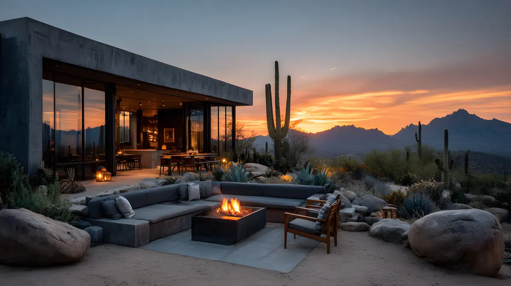

Chaparral Park Homes
Scottsdale's most walkable neighborhood — minutes from Old Town and Fashion Square, anchored by the city's most popular park and zoned for top-rated Scottsdale Unified schools.
Chaparral Park resident & 85250 specialist · Elizabeth Vijan, Tackett Team at eXp Realty
What Is Chaparral Park?
Chaparral Park is a City of Scottsdale park at 5401 N. Hayden Road in the 85250 zip code. It has Scottsdale's most popular dog park, a fully inclusive playground, an aquatic center, a community center and a lake with a fishing pier, and it anchors one of Scottsdale's most walkable neighborhoods.
- Location: 5401 N. Hayden Road, Scottsdale, AZ 85250
- Size: 100 acres of park space
- Amenities: dog park (open 5:30am–10pm), fully inclusive playground, aquatic center, community center, and a lake with a fishing pier
- Greenbelt: connects to the 12-mile Indian Bend Wash path through 85250
- Schools: Scottsdale Unified School District (SUSD)
- Distance to Old Town: about 10 minutes
I Don't Just Sell Chaparral Park. I Live Here.
I'm Elizabeth Vijan, and this site exists for one reason: to be the most honest, detailed resource on the internet for anyone considering the Chaparral Park neighborhood and the 85250 zip code. Not a national franchise site. Not a boilerplate listing feed. A local's actual knowledge of the park, the streets, the schools, and the restaurants — from someone who lives the life I'm describing.
100
Acres at Chaparral Park5:30am–10pm
Dog Park HoursSUSD
School District±10 Min
To Old Town ScottsdaleWhat Is It Like to Live in 85250?
Living in 85250 means a walkable, park-centered Scottsdale neighborhood about 10 minutes from Old Town Scottsdale and Fashion Square. The Indian Bend Wash greenbelt runs through the zip code, the park offers a dog park, playground, aquatic center and community center, and homes are served by Scottsdale Unified School District.
- Walkable: park-centered streets, with Old Town and Fashion Square close by
- Outdoors: the 12-mile Indian Bend Wash greenbelt links parks, golf courses and neighborhoods
- Schools: Scottsdale Unified School District
- Dog-friendly: Scottsdale's most popular dog park
What Actually Makes This Zip Code Different
Every one of these is something I've written about in detail on the blog — click through for the full local breakdown.
 Chaparral Park
Chaparral Park
100 Acres, One Park
Scottsdale's most popular dog park, a fully inclusive playground, an aquatic center, and a community center — all in one place.
 The Greenbelt
The Greenbelt
The Indian Bend Wash
A 12-mile paved greenbelt connecting parks, golf courses, and neighborhoods — running right through 85250.
Scottsdale Unified
One of the most sought-after districts in the Phoenix metro — a top reason families choose 85250.
 Old Town
Old Town
The Sweet Spot
Close enough to walk to Old Town and Fashion Square, far enough to still feel like a neighborhood.
A Real Food Scene
From neighborhood coffee shops to Fashion Square's new luxury dining lineup, all a short drive away.
 Investment
Investment
A Zip Code Worth Watching
Why investors from California to Chicago keep circling back to 85250.
The Indoor-Outdoor Lifestyle Valley Buyers Want
Mountain views, resort-style backyards and open, light-filled interiors define Scottsdale living. Tell me what you're picturing and I'll find it in Chaparral Park and 85250.



Representative Scottsdale-area imagery. See how I help buyers.
Explore Other Scottsdale & Phoenix Areas
Chaparral Park Homes is part of Elizabeth Vijan's network of local sites. Looking beyond 85250? Explore the other areas she serves at elizabethvijan.com.
Scottsdale
Guard-gated golf estates, Old Town nightlife, and the Chaparral Park & 85250 corridor.
Explore Scottsdale → PhoenixArcadia
Citrus-grove estate lots beneath Camelback Mountain, mid-century ranches, and destination dining.
Explore Arcadia → PhoenixArcadia Lite
Arcadia's walkable charm at a more attainable price point, steps from Camelback & Indian School dining.
Explore Arcadia Lite → PhoenixCentral Phoenix
Historic districts like Willo & Encanto-Palmcroft, walkable to Roosevelt Row and the Biltmore corridor.
Explore Central Phoenix →What Is Your Chaparral Park Home Worth Today?
Send me your address and I'll put together a real, human comparative market analysis — no obligation. Want a read on the Chaparral Park and 85250 market instead? Ask for the market report and I'll send it over.
Prefer to talk? Call 602-885-7752 or text me.
The Local's Guide to 85250
Why Chaparral Park Is the Heart of 85250
And why buyers are moving here fast — what it's actually like to walk the park on a Saturday morning.
Read ArticleRelocating to Scottsdale? Here's What to Know
What out-of-state buyers should know about 85250 before they land.
Read ArticleMore Local Guides
The park, the greenbelt, the food and the neighborhoods that make 85250 different.
Browse the JournalChaparral Park & 85250 Questions, Answered
Straight answers from a Chaparral Park resident. Need something specific? Ask me directly.
What is Chaparral Park?
Chaparral Park is a City of Scottsdale park at 5401 N. Hayden Road in the 85250 zip code. It has Scottsdale's most popular dog park, a fully inclusive playground, an aquatic center, a community center and a lake with a fishing pier, and it anchors one of Scottsdale's most walkable neighborhoods.
What is it like to live in 85250?
Living in 85250 means a walkable, park-centered Scottsdale neighborhood about 10 minutes from Old Town Scottsdale and Fashion Square. The Indian Bend Wash greenbelt runs through the zip code, the park offers a dog park, playground, aquatic center and community center, and homes are served by Scottsdale Unified School District.
What school district is Chaparral Park in?
Chaparral Park and the 85250 zip code are served by the Scottsdale Unified School District (SUSD), one of the most sought-after districts in the Phoenix metro. Specific school assignments depend on the address, so confirm with the district before you buy. Elizabeth can check any address for you.
How far is Chaparral Park from Old Town Scottsdale?
About 10 minutes. 85250 is close enough to Old Town Scottsdale and Fashion Square to enjoy them often, yet far enough away to still feel like a neighborhood.
What are the Chaparral Park dog park hours?
The dog park is open 5:30 a.m. to 10 p.m. year-round, with maintenance closures on Tuesdays and Fridays from 8 a.m. to noon, according to the City of Scottsdale. The park itself is open from sunrise to 10:30 p.m. Hours can change, so check scottsdaleaz.gov before you go.
What is the Indian Bend Wash greenbelt?
The Indian Bend Wash is a 12-mile paved greenbelt connecting parks, golf courses and neighborhoods in Scottsdale, and it runs right through 85250.
Can I buy near Chaparral Park if I am relocating from out of state?
Yes. Elizabeth has helped buyers relocate to 85250 from California, Illinois, Texas and beyond, with flexible scheduling, video tours and remote closings when needed.
How do I find out what my Chaparral Park home is worth?
Contact Elizabeth with your address for a free, no-obligation comparative market analysis. It is a real conversation about comparable Chaparral Park and 85250 sales, staging recommendations and pricing strategy, not an automated estimate.

Ready to find your place in 85250?
Whether you're buying, selling, or just curious what your home near Chaparral Park is worth, I respond quickly and personally.
Get In Touch